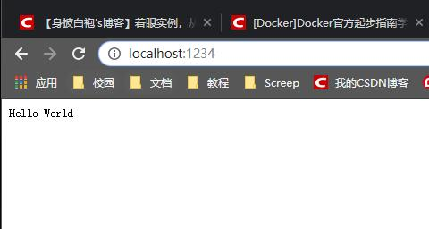
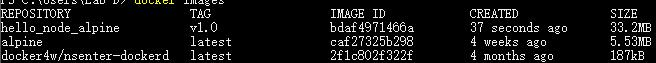
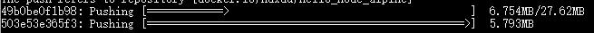

<!DOCTYPE html>
<html lang="zh" class="loading">
<head><meta name="generator" content="Hexo 3.9.0">
    <meta charset="UTF-8">
    <meta http-equiv="X-UA-Compatible" content="IE=edge,chrome=1">
    <meta name="viewport" content="width=device-width, minimum-scale=1.0, maximum-scale=1.0, user-scalable=no">
    <title>Docker官方起步指南学习笔记④——实例之基于Alpine的nodejs服务器 - WhiteRobe&#39;s Blog</title>
    <meta name="apple-mobile-web-app-capable" content="yes">
    <meta name="apple-mobile-web-app-status-bar-style" content="black-translucent">
    <meta name="google" content="notranslate">
    <link href="https://cdnjs.cloudflare.com/ajax/libs/KaTeX/0.11.0/katex.min.css" rel="stylesheet">
    <meta name="keywords" content="WhiteRobe, Blog,"> 
    <meta name="description" content="着眼实例，从最简单的开始；你觉得再简单不过的东西，或许在别人眼里那就是悬崖。而我，愿作那攀岩绳。, 本次目标

本次的目标是基于前三次课的知识，利用Alpine的最小环境，搭建node.js环境，并创建Hello world网页应用；最后将该容器打包成映像，发布到DockerHub上。


Ti,"> 
    <meta name="author" content="WhiteRobe"> 
    <link rel="alternative" href="atom.xml" title="WhiteRobe&#39;s Blog" type="application/atom+xml"> 
    <link rel="icon" href="/img/favicon.png"> 
    <link rel="stylesheet" href="//cdn.jsdelivr.net/npm/gitalk@1/dist/gitalk.css">
    <link rel="stylesheet" href="/css/animate.css">
    <link rel="stylesheet" href="/css/fira_code.css">
    <link rel="stylesheet" href="/css/diaspora.css">
    <script async src="https://busuanzi.ibruce.info/busuanzi/2.3/busuanzi.pure.mini.js"></script>
    
        <!--站内搜索API-->
        <script src="https://cdn.jsdelivr.net/algoliasearch/3/algoliasearch.min.js"></script>
        <link rel="stylesheet" href="https://cdn.jsdelivr.net/npm/instantsearch.css@7.3.1/themes/algolia-min.css" integrity="sha256-HB49n/BZjuqiCtQQf49OdZn63XuKFaxcIHWf0HNKte8=" crossorigin="anonymous">
        <script src="https://cdn.jsdelivr.net/npm/instantsearch.js@3.4.0/dist/instantsearch.production.min.js" integrity="sha256-pM0n88cBFRHpSn0N26ETsQdwpA7WAXJDvkHeCLh3ujI=" crossorigin="anonymous"></script>
    
    <!-- <script async src="//pagead2.googlesyndication.com/pagead/js/adsbygoogle.js"></script>
    <script>
          // No more ads!
         (adsbygoogle = window.adsbygoogle || []).push({
              google_ad_client: "ca-pub-8691406134231910",
              enable_page_level_ads: true
         });
    </script>
    <script async custom-element="amp-auto-ads"
        src="https://cdn.ampproject.org/v0/amp-auto-ads-0.1.js">
    </script> -->
</head>
</html>
<body class="loading">
    <span id="config-title" style="display:none">WhiteRobe&#39;s Blog</span>
    <div id="loader"></div>
    <div id="single">
    <div id="top" style="display: block; display: block;position: fixed; top: 0px;">
    <div class="bar" style="width: 0;"></div>
    <a class="icon-home image-icon" href="javascript:;" data-url="https://blog.whiterobe.top"></a>
    <div title="播放/暂停" class="icon-play"></div>
    <h3 class="subtitle">Docker官方起步指南学习笔记④——实例之基于Alpine的nodejs服务器</h3>
    <div class="social">
        <!--<div class="like-icon">-->
            <!--<a href="javascript:;" class="likeThis active"><span class="icon-like"></span><span class="count">76</span></a>-->
        <!--</div>-->
        <div style="font-size: 1rem;margin-right: -10px">
          分享此文：
        </div>
        <div>
          <div class="share">
              <a title="获取文章地址二维码" class="icon-scan" href="javascript:;"></a>
          </div>
          <div id="qr"></div>
        </div>
    </div>
    <div class="scrollbar"></div>
</div>

    <div class="section" style="margin-top: 50px">
        <div class="article">
    <div class='main'>
        <h1 class="title">Docker官方起步指南学习笔记④——实例之基于Alpine的nodejs服务器</h1>
        <div class="stuff">
            <span>九月 17, 2019</span>
            <span id="busuanzi_container_page_pv" class="busuanzi_page" style="display:none">本文总阅读量<div id="busuanzi_value_page_pv" style="display: inline;">1</div>次</span>
            
  <ul class="post-tags-list"><li class="post-tags-list-item"><a class="post-tags-list-link" href="/tags/Docker/">Docker</a></li><li class="post-tags-list-item"><a class="post-tags-list-link" href="/tags/版本控制/">版本控制</a></li></ul>


        </div>
        <div class="low-resolution-warn-info">当前设备屏幕尺寸过小，推荐使用PC模式浏览。</div>
        <div class="content markdown">
            <h1 id="本次目标"><a class="markdownIt-Anchor" href="#本次目标"></a> 本次目标</h1>
<blockquote>
<p>本次的目标是基于前三次课的知识，利用Alpine的最小环境，搭建node.js环境，并创建Hello world网页应用；最后将该容器打包成映像，发布到DockerHub上。</p>
</blockquote>
<blockquote>
<p>Tips:事实上，使用<code>docker search node</code>就可以找到<code>node_alpine</code>的官方仓库。此次我们将尝试自己搭建。</p>
</blockquote>
<h1 id="开始实战"><a class="markdownIt-Anchor" href="#开始实战"></a> 开始实战</h1>
<h2 id="编写服务器应用"><a class="markdownIt-Anchor" href="#编写服务器应用"></a> 编写服务器应用</h2>
<figure class="highlight javascript"><table><tr><td class="gutter"><pre><span class="line">1</span><br><span class="line">2</span><br><span class="line">3</span><br><span class="line">4</span><br><span class="line">5</span><br><span class="line">6</span><br><span class="line">7</span><br><span class="line">8</span><br><span class="line">9</span><br></pre></td><td class="code"><pre><span class="line"><span class="comment">// server.js</span></span><br><span class="line"><span class="keyword">var</span> http = <span class="built_in">require</span>(<span class="string">'http'</span>);</span><br><span class="line"></span><br><span class="line">http.createServer(<span class="function"><span class="keyword">function</span> (<span class="params">request, response</span>) </span>&#123;</span><br><span class="line">    response.writeHead(<span class="number">200</span>, &#123;<span class="string">'Content-Type'</span>: <span class="string">'text/plain'</span>&#125;);</span><br><span class="line">    response.end(<span class="string">'Hello World\n'</span>);</span><br><span class="line">&#125;).listen(<span class="number">1234</span>);</span><br><span class="line"></span><br><span class="line"><span class="built_in">console</span>.log(<span class="string">'Server running at http://localhost:1234/'</span>);</span><br></pre></td></tr></table></figure>
<p>在本机测试<code>node server.js</code>，访问<code>http://localhost:1234/</code>可见Hello World字样的输出。</p>
<h2 id="创建nodejs环境的alpine容器"><a class="markdownIt-Anchor" href="#创建nodejs环境的alpine容器"></a> 创建nodejs环境的Alpine容器</h2>
<ol>
<li>基于<a href="https://blog.csdn.net/Shenpibaipao/article/details/88174275#_42" target="_blank" rel="noopener">&gt;上一节&lt;</a>的知识，把存有<code>server.js</code>脚本的文件挂载到容器实例上，并将端口映射为<code>1234(宿主机)-&gt;1234(容器)</code>.</li>
</ol>
<figure class="highlight shell"><table><tr><td class="gutter"><pre><span class="line">1</span><br></pre></td><td class="code"><pre><span class="line">docker run -dit --name=test -p 1234:1234 -v I:\js_server\:/js_server alpine</span><br></pre></td></tr></table></figure>
<blockquote>
<p>其中，<code>I:\js_server\</code>是宿主机中<code>server.js</code>的存放地址；<code>/js_server</code>是容器的数据卷挂载地址。<code>I</code>盘已经被设为<code>Shared Drives</code>。</p>
</blockquote>
<ol start="2">
<li>为alpine服务器安装nodejs环境：</li>
</ol>
<figure class="highlight shell"><table><tr><td class="gutter"><pre><span class="line">1</span><br></pre></td><td class="code"><pre><span class="line">apk add nodejs</span><br></pre></td></tr></table></figure>
<p>输出如下：</p>
<figure class="highlight shell"><table><tr><td class="gutter"><pre><span class="line">1</span><br><span class="line">2</span><br><span class="line">3</span><br><span class="line">4</span><br><span class="line">5</span><br><span class="line">6</span><br><span class="line">7</span><br><span class="line">8</span><br><span class="line">9</span><br><span class="line">10</span><br><span class="line">11</span><br><span class="line">12</span><br></pre></td><td class="code"><pre><span class="line">fetch http://dl-cdn.alpinelinux.org/alpine/v3.9/main/x86_64/APKINDEX.tar.gz</span><br><span class="line">fetch http://dl-cdn.alpinelinux.org/alpine/v3.9/community/x86_64/APKINDEX.tar.gz</span><br><span class="line">(1/7) Installing ca-certificates (20190108-r0)</span><br><span class="line">(2/7) Installing c-ares (1.15.0-r0)</span><br><span class="line">(3/7) Installing libgcc (8.2.0-r2)</span><br><span class="line">(4/7) Installing http-parser (2.8.1-r0)</span><br><span class="line">(5/7) Installing libstdc++ (8.2.0-r2)</span><br><span class="line">(6/7) Installing libuv (1.23.2-r0)</span><br><span class="line">(7/7) Installing nodejs (10.14.2-r0)</span><br><span class="line">Executing busybox-1.29.3-r10.trigger</span><br><span class="line">Executing ca-certificates-20190108-r0.trigger</span><br><span class="line">OK: 31 MiB in 21 packages</span><br></pre></td></tr></table></figure>
<p>测试node版本：<code>node --version</code>，输出<code>v10.14.2</code>，可见node环境已经安装完毕。</p>
<ol start="3">
<li>执行server.js脚本:</li>
</ol>
<figure class="highlight shell"><table><tr><td class="gutter"><pre><span class="line">1</span><br><span class="line">2</span><br></pre></td><td class="code"><pre><span class="line">cp /js_server/server.js /home/server.js</span><br><span class="line">node /home/server.js</span><br></pre></td></tr></table></figure>
<p>在本机(Windows10)的浏览器打开<code>http://localhost:1234/</code>，得到网页输出：<br>
<br>
按下<code>Ctrl+C</code>或直接关闭终端可以关闭服务器。但在此之前，我们将把该容器打包为一个映像。使用<code>Ctrl+P</code>+<code>Ctrl+Q</code>返回到宿主机的Shell界面。</p>
<h2 id="将容器打包为映像"><a class="markdownIt-Anchor" href="#将容器打包为映像"></a> 将容器打包为映像</h2>
<figure class="highlight shell"><table><tr><td class="gutter"><pre><span class="line">1</span><br></pre></td><td class="code"><pre><span class="line">docker commit -a shenpibaopao -m pack test hello_node_alpine:v1.0</span><br></pre></td></tr></table></figure>
<blockquote>
<p><code>docker commit</code>指令会将当前容器打包成一个镜像，常用可选配置项有：</p>
<ul>
<li>-a 添加作者的信息</li>
<li>-c 修改Dockerfile的一些指令</li>
<li>-m 提交时的修改备注，类似于<code>git commit -m</code>的作用</li>
<li>-p 暂停正在commit的操作</li>
</ul>
</blockquote>
<p>查看当前镜像<code>docker images</code>：</p>
<p></p>
<p>可以看到新的映像已经出现了。</p>
<p>如果已经登陆DockerHub，使用<code>docker push</code>指令即可直接发布到DockerHub，否则请使用<code>docker login</code>指令进行登陆。</p>
<blockquote>
<p>Tips:如果出现 <code>denied: requested access to the resource is denied</code> 的错误，需要使用 <code>docker tag</code> 指令为映像重新命名：<br>
<code>docker tag hello_node_alpine:v1.0 你的DockerHub ID/hello_node_alpine:v1.0</code></p>
</blockquote>
<p>此时将会看到有两层映像被push上去，其中一个自然是原生的<code>alpine</code>，另一个则是我们在此之上做的修改。</p>
<p></p>
<h1 id="映像的再次使用"><a class="markdownIt-Anchor" href="#映像的再次使用"></a> 映像的再次使用</h1>
<h2 id="保存映像"><a class="markdownIt-Anchor" href="#保存映像"></a> 保存映像</h2>
<p>使用命令:</p>
<figure class="highlight shell"><table><tr><td class="gutter"><pre><span class="line">1</span><br></pre></td><td class="code"><pre><span class="line">docker save 你的DockerHub ID/hello_node_alpine:v1.0 -o I:/test.tar</span><br></pre></td></tr></table></figure>
<p>将可以把该映像导出为<code>test.tart</code>。</p>
<blockquote>
<p><strong>注意</strong>:使用 <code>docker save image &gt; file</code> 在Win10下可能导致<code>Error processing tar file(exit status 1): archive/tar: invalid tar header</code>错误！</p>
</blockquote>
<h2 id="载入映像"><a class="markdownIt-Anchor" href="#载入映像"></a> 载入映像</h2>
<p>使用命令:</p>
<figure class="highlight shell"><table><tr><td class="gutter"><pre><span class="line">1</span><br></pre></td><td class="code"><pre><span class="line">docker load -i I:\test.tar</span><br></pre></td></tr></table></figure>
            <!--[if lt IE 9]><script>document.createElement('audio');</script><![endif]-->
            <audio id="audio" loop="1" preload="auto" controls="controls" data-autoplay="true">
                <source type="audio/mpeg" src="">
            </audio>
            
                <ul id="audio-list" style="display:none">
                    
                        
                            <li title='0' data-url='https://gitee.com/shenpibaipao/wr-diaspora/raw/master/source/audio/jinyecheng.mp3'></li>
                        
                    
                        
                            <li title='1' data-url='https://gitee.com/shenpibaipao/wr-diaspora/raw/master/source/audio/juhuatai.mp3'></li>
                        
                    
                        
                            <li title='2' data-url='https://gitee.com/shenpibaipao/wr-diaspora/raw/master/source/audio/MapleStory.mp3'></li>
                        
                    
                </ul>
            
        </div>
        
    <div id='gitalk-container' class="comment link"
        data-ae='true'
        data-ci='5b763306cd7b9d9c3981'
        data-cs='c31e9bf78a807055f5439caea747b09d1d9c8f18'
        data-r='image-blog.io'
        data-o='WhiteRobe'
        data-a='WhiteRobe'
        data-d='false'
    >查看评论</div>


    </div>
    
        <div class='side'>
            <ol class="toc"><li class="toc-item toc-level-1"><a class="toc-link" href="#本次目标"><span class="toc-number">1.</span> <span class="toc-text"> 本次目标</span></a></li><li class="toc-item toc-level-1"><a class="toc-link" href="#开始实战"><span class="toc-number">2.</span> <span class="toc-text"> 开始实战</span></a><ol class="toc-child"><li class="toc-item toc-level-2"><a class="toc-link" href="#编写服务器应用"><span class="toc-number">2.1.</span> <span class="toc-text"> 编写服务器应用</span></a></li><li class="toc-item toc-level-2"><a class="toc-link" href="#创建nodejs环境的alpine容器"><span class="toc-number">2.2.</span> <span class="toc-text"> 创建nodejs环境的Alpine容器</span></a></li><li class="toc-item toc-level-2"><a class="toc-link" href="#将容器打包为映像"><span class="toc-number">2.3.</span> <span class="toc-text"> 将容器打包为映像</span></a></li></ol></li><li class="toc-item toc-level-1"><a class="toc-link" href="#映像的再次使用"><span class="toc-number">3.</span> <span class="toc-text"> 映像的再次使用</span></a><ol class="toc-child"><li class="toc-item toc-level-2"><a class="toc-link" href="#保存映像"><span class="toc-number">3.1.</span> <span class="toc-text"> 保存映像</span></a></li><li class="toc-item toc-level-2"><a class="toc-link" href="#载入映像"><span class="toc-number">3.2.</span> <span class="toc-text"> 载入映像</span></a></li></ol></li></ol>
        </div>
    
</div>


    </div>
    <!--下悬浮返回键-->
    <div style="background: white; height:30px; width: 30px; border-radius: 16px; position: fixed; bottom: 1.5rem; right: 1.5rem; border: 2px solid rgba(0, 0, 0, 0.5)">
      <a class="icon-left image-icon" style="left:4px; top:4px" href="javascript:history.back()"></a>
    </div>
</div>
</body>
<script src="//cdn.jsdelivr.net/npm/gitalk@1/dist/gitalk.min.js"></script>
<script src="//lib.baomitu.com/jquery/1.8.3/jquery.min.js"></script>
<script src="/js/plugin.js"></script>
<script src="/js/diaspora.js"></script>
<link rel="stylesheet" href="/photoswipe/photoswipe.css">
<link rel="stylesheet" href="/photoswipe/default-skin/default-skin.css">
<script src="/photoswipe/photoswipe.min.js"></script>
<script src="/photoswipe/photoswipe-ui-default.min.js"></script>

<!-- Root element of PhotoSwipe. Must have class pswp. -->
<div class="pswp" tabindex="-1" role="dialog" aria-hidden="true">
    <!-- Background of PhotoSwipe. 
         It's a separate element as animating opacity is faster than rgba(). -->
    <div class="pswp__bg"></div>
    <!-- Slides wrapper with overflow:hidden. -->
    <div class="pswp__scroll-wrap">
        <!-- Container that holds slides. 
            PhotoSwipe keeps only 3 of them in the DOM to save memory.
            Don't modify these 3 pswp__item elements, data is added later on. -->
        <div class="pswp__container">
            <div class="pswp__item"></div>
            <div class="pswp__item"></div>
            <div class="pswp__item"></div>
        </div>
        <!-- Default (PhotoSwipeUI_Default) interface on top of sliding area. Can be changed. -->
        <div class="pswp__ui pswp__ui--hidden">
            <div class="pswp__top-bar">
                <!--  Controls are self-explanatory. Order can be changed. -->
                <div class="pswp__counter"></div>
                <button class="pswp__button pswp__button--close" title="Close (Esc)"></button>
                <button class="pswp__button pswp__button--share" title="Share"></button>
                <button class="pswp__button pswp__button--fs" title="Toggle fullscreen"></button>
                <button class="pswp__button pswp__button--zoom" title="Zoom in/out"></button>
                <!-- Preloader demo http://codepen.io/dimsemenov/pen/yyBWoR -->
                <!-- element will get class pswp__preloader--active when preloader is running -->
                <div class="pswp__preloader">
                    <div class="pswp__preloader__icn">
                      <div class="pswp__preloader__cut">
                        <div class="pswp__preloader__donut"></div>
                      </div>
                    </div>
                </div>
            </div>
            <div class="pswp__share-modal pswp__share-modal--hidden pswp__single-tap">
                <div class="pswp__share-tooltip"></div> 
            </div>
            <button class="pswp__button pswp__button--arrow--left" title="Previous (arrow left)">
            </button>
            <button class="pswp__button pswp__button--arrow--right" title="Next (arrow right)">
            </button>
            <div class="pswp__caption">
                <div class="pswp__caption__center"></div>
            </div>
        </div>
    </div>
</div>


</html>
